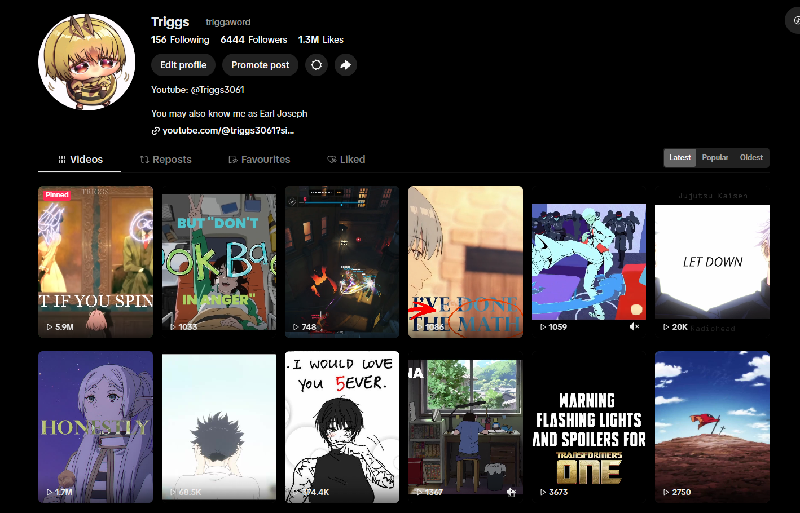
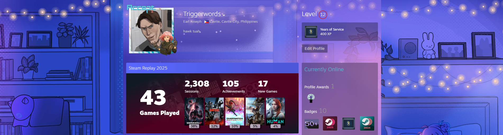
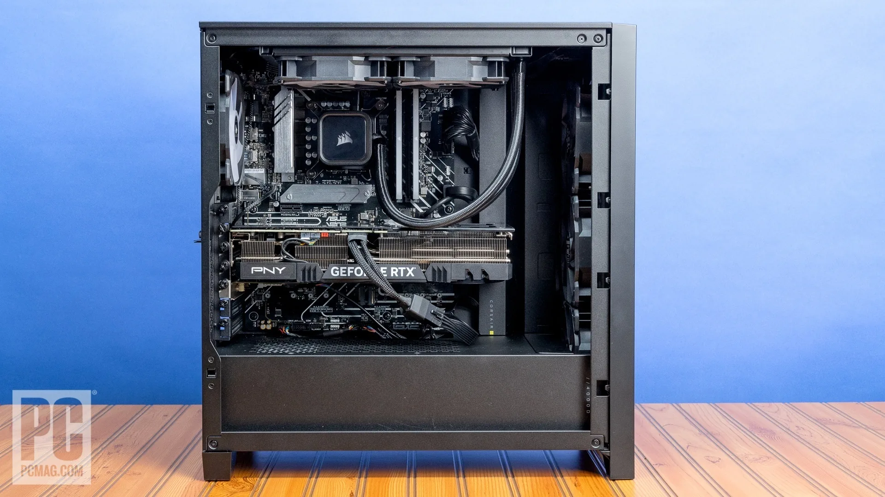
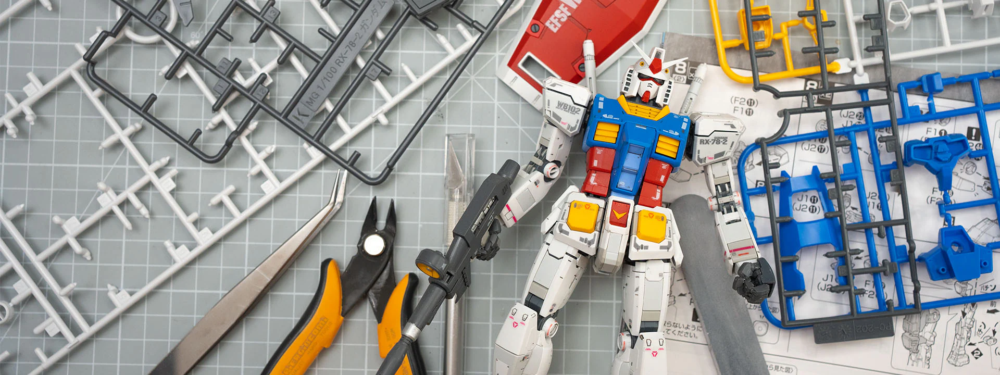
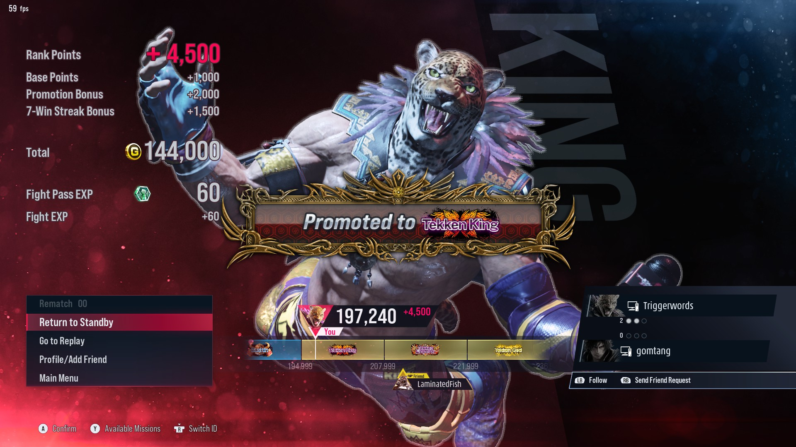
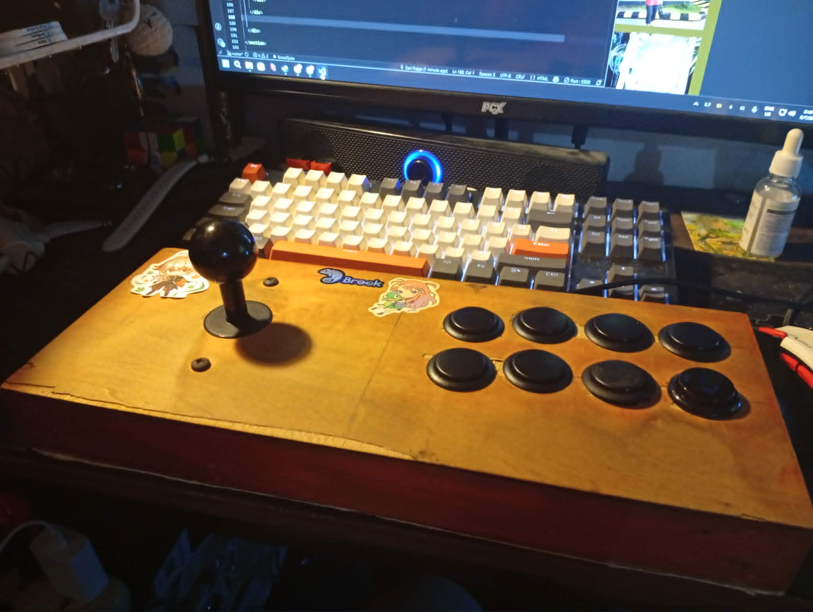

About Me
My name is Earl Joseph L. Limo
20 Years old, BSIT College Student
I am a CvSU-Imus student From the Philippines willing to learn more about web development and programming. My learning journey includes HTML, CSS, and JavaScript. Along with Java, C++, and Python.
In addition to software development, I also specialize in IT hardware and networking, where I gain practical experience in computer systems, troubleshooting, and network setup. I specialize in troubleshooting and maintaining computer systems as well as building hardware systems and servers.
I am continuously improving my skills through personal projects, experimentation, and problem-solving, with the goal of becoming a well-rounded and industry-ready IT Specialist.
Education History

BS Information Technology
Cavite State University - Imus Campus2024 - Present
Focused on web development, programming, hardware, and IT systems.

Technical-Vocational-Livelihood – Information and Communications Technology
Datacom Institute of Computer Technology - Imus Cavite2022 - 2024
Focused on Networking, server administration, and Server systems.
Hobbies & Interests

Video Editing
I create and experiment on video editing. I made and uploaded multiple videos on YouTube and TikTok.
Link to my TikTok Account →
Gaming
I enjoy competitive and story-driven games during my free time. I also stream on YouTube and create content ideas using Video Editing.
Link to my YouTube Channel →
PC Building
I like assembling, upgrading, and troubleshooting computer systems. Started when I was 12 years old with an office computer my mother gave me. Slowly learning and upgrading my system over the years, and now I have a custom-built gaming PC.

Gunpla Building
I enjoy building and customizing Gunpla models. It's a relaxing hobby that allows me to express my creativity and attention to detail. Learned how to use paint and LED lightings from this hobby.

Competitive Tekken
I participate in competitive Local Tekken tournaments and enjoy improving my gameplay skills. Started playing since Tekken 6, but I started competing in 2023. I have won only 1 tournament so far, but have placed in the top 8 multiple times in local tournaments across manila and cavite.
Link to my Tekken Profile →
DIY Tech Projects
I enjoy building and customizing various tech projects, from simple electronics to complex computer systems. It's a great way to apply my knowledge and creativity. Built my own Arcade Stick for fighting games and used it for competitive Tekken tournaments.